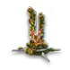
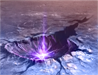
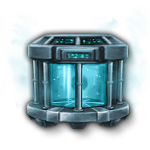
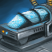
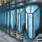

{kind=link}
{kind=link}
{kind=link}
{kind=link}
{kind=link}
{kind=link}
{kind=link}
{kind=link}
{kind=link}
{kind=link}
{kind=link}
Empire Founder species
|
||||||
|---|---|---|---|---|---|---|
|
|
|
|
|
| |
|
|
|
|
|
| |
|
|
|
|
|
|
|
|
|
|
|
|
||
|
|
|
|
Colonization
Colonization is the process of establishing control over an uninhabited, habitable planet with a Colony Ship. Planets with an anomaly or a pre-FTL civilization cannot be colonized. Only species that have the Colonization Allowed species rights can colonize and if the species rights are changed or the planet changes hands at the end of a war to an empire that does not give the colonizing species the same rights, the colonization process is canceled.
Habitability
 Habitability is the measure of how comfortably a species can live on a planet. Most species have a climate preference for one of the primary habitable planet types, although more exotic preferences are possible. A planet's habitability for a given species is determined by how closely its climate matches that species' preference. The 9 regular habitable world types are divided into 3 climate categories: dry, frozen, and wet.
Habitability is the measure of how comfortably a species can live on a planet. Most species have a climate preference for one of the primary habitable planet types, although more exotic preferences are possible. A planet's habitability for a given species is determined by how closely its climate matches that species' preference. The 9 regular habitable world types are divided into 3 climate categories: dry, frozen, and wet.  Mechanical and
Mechanical and  Machine species have habitability traits for climate groups rather than individual planet types.
Machine species have habitability traits for climate groups rather than individual planet types.  Ring Worlds,
Ring Worlds,  Gaia Worlds, and
Gaia Worlds, and  Ecumenopolises have maximum habitability for all species, while
Ecumenopolises have maximum habitability for all species, while  Tomb Worlds,
Tomb Worlds,  Machine Worlds, and
Machine Worlds, and  Hive Worlds normally have
Hive Worlds normally have  0% habitability and require certain traits for pops to comfortably live there.
0% habitability and require certain traits for pops to comfortably live there.
| Tier | Base |
|---|---|
| Gaia World, Ecumenopolis, and Ring World | 100% |
| Hive World for |
100% |
| Machine World for |
100% |
| Relic World or exact match | 80% |
| Robotic climate match | 75% |
| Climate category match | 60% |
| Robot climate category mismatch | 50% |
| Habitat (Tier III) | 60% |
| Habitat (Tier II) | 50% |
| Habitat (Tier I) | 40% |
| Climate category mismatch | 20% |
| Tomb World, Machine World, and Hive World | 0% |
- Every 1% reduction of habitability below 100% increases pops'
 upkeep and
upkeep and  amenities usage by +1% and reduces their
amenities usage by +1% and reduces their  job efficiency and
job efficiency and  species growth by −0.5%. It floors at 0% Habitability, giving +100% pop upkeep and amenities usage, and −50% job output and pop growth.
species growth by −0.5%. It floors at 0% Habitability, giving +100% pop upkeep and amenities usage, and −50% job output and pop growth. - Homeworlds have +30% habitability for the species originating from them.
- Low habitability can trigger various events.
- A confirmation message pops up if you attempt to settle a planet with less than 70% habitability.
- In some cases, there may be a raised habitability floor or a lowered habitability ceiling:
- Robotic pops or species with
 Cave Dweller or
Cave Dweller or  Molebots traits have a habitability floor of 50%. This can stack, giving Molebots effectively 100% habitability everywhere.
Molebots traits have a habitability floor of 50%. This can stack, giving Molebots effectively 100% habitability everywhere. - The habitability ceiling can be reduced to below 100%, such as pops with
 Noxious traits or from certain rare blockers.
Noxious traits or from certain rare blockers. - The habitability floor overrides the habitability ceiling if it is higher.
- Robotic pops or species with
There are four ways to improve habitability:
- Terraforming the planet. This needs a certain technology and may have additional requirements depending on the original planet. Some terraforming methods also require an ascension perk.
- Modifying the climate preference of the pops, which requires the
 Glandular Acclimation technology for biological pops (robots/machines do not require technology to change habitability), or adding traits that increase habitability. A template with the appropriate traits can be applied to pops on relevant planets, or used by colony ships.
Glandular Acclimation technology for biological pops (robots/machines do not require technology to change habitability), or adding traits that increase habitability. A template with the appropriate traits can be applied to pops on relevant planets, or used by colony ships. - Obtaining alien species with a different climate preference. This can be done by conquest, migration treaty, infiltrating a pre-FTL civilization, uplifting a pre-sapient species, certain events and offers, or purchasing from the
 Slave Market. Empires can colonize with any species that has migration access to the empire, even if no pops of that species currently live on the empire's worlds, provided they have the Colonization Allowed species right.
Slave Market. Empires can colonize with any species that has migration access to the empire, even if no pops of that species currently live on the empire's worlds, provided they have the Colonization Allowed species right. - Researching technologies, acquiring traditions, or constructing buildings that increase base habitability.
Habitability indicators
Systems containing habitable worlds have one or more planet icons that are either green, yellow, orange, red, or blue – depending on the habitability percentage and/or status of the planet(s) in question.
Improving habitability
Aside from changing climate preference, there are also various other sources for affecting habitability:
| Habitability (empire) | |
|---|---|
| Source | Effect |
| +15% | |
| +10% | |
| +10% | |
 Sanctum of the Composer building |
+10% |
| +10% | |
| +5% | |
| +5% | |
| +5% | |
| +5% | |
| +5% | |
| +5% | |
| +5% | |
| +5% | |
| +5% | |
| −2% | |
| −5% | |
| −10% | |
| −20% | |
| −25% | |
| Minimum Habitability | |
|---|---|
| Source | Effect |
| +80% | |
| +50% | |
| +50% | |
| +50% | |
| +30% | |
| +30% | |
| +25% | |
Terraforming
Terraforming is the process of changing the planet classification of a planet in order to make it more habitable for a species. A planet must be surveyed and within the empire's borders to be terraformed. It is possible to terraform inhabited planets if the empire has the  Ecological Adaptation technology. Doing so inflicts a
Ecological Adaptation technology. Doing so inflicts a  −20% happiness penalty on the planet for the duration of the process.
−20% happiness penalty on the planet for the duration of the process.
The first time a planet is terraformed, there's a chance of triggering a terraforming event. Terraformed planets cannot receive colony events.
Some planet modifiers will be removed when terraforming a planet:
Terraforming cost and speed are affected by the following:
| Terraforming cost | |
|---|---|
| Source | Effect |
| −25% | |
Genesis Guides civic |
−25% |
| −15% | |
| −10% | |
| −10% | |
| +25% | |
| +100% | |
| Terraforming speed | |
|---|---|
| Source | Effect |
| +50% | |
| +33% | |
| +25% | |
Genesis Guides civic |
+25% |
| +10% | |
| +10% | |
| +10% | |
| +10% | |
| −20% | |
| −40% | |
| −60% | |
| −80% | |
Some planets are unable to be terraformed by standard methods:
 Ecumenopoli and
Ecumenopoli and 
 habitable megastructures cannot be terraformed
habitable megastructures cannot be terraformed Relic Worlds cannot be terraformed except by restoring it into an Ecumenopolis
Relic Worlds cannot be terraformed except by restoring it into an Ecumenopolis- Planets with pre-sapients cannot be terraformed if their policy is set to Protected
- Several of the Scion of Vagros related planets cannot be terraformed
 Metal Planet cannot be terraformed
Metal Planet cannot be terraformed
| New climate | Original climate | Regular cost | Years | Required technology | |
|---|---|---|---|---|---|
|
Same climate type | ||||
| Different climate type | |||||
If an uncolonized planet is terraformed by  Wilderness Empire, this planet will be automatically colonized. They can terraform uncolonized planets to the same planet type, which costs
Wilderness Empire, this planet will be automatically colonized. They can terraform uncolonized planets to the same planet type, which costs  500 biomass and takes
500 biomass and takes  3 years, and require
3 years, and require  Ecological Adaptation technology to terraform uncolonized different climate planets.
Ecological Adaptation technology to terraform uncolonized different climate planets.
Special planet types
| New climate | Original climate | Regular cost | Years | Requirements | Notes | |
|---|---|---|---|---|---|---|
| Any regular climate | A unique planet with the | |||||
| Any habitable | All planetary features except rare features are removed. Cannot terraform on a | |||||
| Any habitable | ||||||
| Any regular climate | If terraformed on a | |||||
| Any regular climate | If terraformed on a | |||||
If the planet is terraformed into a  Machine World and there are any pops on the planet without the
Machine World and there are any pops on the planet without the  Cybernetic,
Cybernetic,  Mechanical, or
Mechanical, or  Machine traits, they are all killed, and the
Machine traits, they are all killed, and the  Organic Slurry feature is added.
Organic Slurry feature is added.
Terraforming candidates
Planets that have a 
 Terraforming Candidate modifier can be terraformed after researching the
Terraforming Candidate modifier can be terraformed after researching the  Climate Restoration technology.
Climate Restoration technology.
| New climate | Original climate | Regular cost | Years | Requirements | |
|---|---|---|---|---|---|
| Any regular climate | |||||
| Any regular climate | |||||
If the terraformed planet was a  Toxic World, the following blockers are created:
Toxic World, the following blockers are created:

 Poisonous Algae
Poisonous Algae Rotten Soil
Rotten Soil Tainted Snowcaps
Tainted Snowcaps Unpleasant Atmosphere
Unpleasant Atmosphere Venomous Insects
Venomous Insects
Alternative terraforming methods
Worlds can also be terraformed via terraforming decisions, which will terraform the world either instantly or when a situation started by the decision is completed.
In addition to the regular terraforming mechanics above, certain buildings, events, special projects, or other actions can terraform a planet.
The following can turn a planet into a  Gaia World:
Gaia World:
- Idyllic Bloomempires can build
 Idyllic Bloom
Idyllic Bloom Mycorrhizal Ideal
Mycorrhizal Ideal Gaia Seeders buildings and Gaia Seeder Outpost holdings, which turn planets into Gaia Worlds.
Gaia Seeders buildings and Gaia Seeder Outpost holdings, which turn planets into Gaia Worlds. - The science ship used by Astrocreator Azaryn has the ability to terraform 3 planets into Gaia Worlds with the
 Overgrowth modifier at the cost of
Overgrowth modifier at the cost of  10000 Energy and 10 years.
10000 Energy and 10 years.  Barren Worlds, even without the Terraforming Candidate modifier, can be terraformed this way as well but the time is increased to 25 years. The science ship merely starts the process and does not have to stay there.
Barren Worlds, even without the Terraforming Candidate modifier, can be terraformed this way as well but the time is increased to 25 years. The science ship merely starts the process and does not have to stay there.
The following can turn a planet into a  Tomb World:[1]
Tomb World:[1]
 Armageddon bombardment turns the planet into a Tomb World if the last pop is killed.
Armageddon bombardment turns the planet into a Tomb World if the last pop is killed. Javorian Pox bombardment turns the planet into a Tomb World if the last pop is killed. If there are
Javorian Pox bombardment turns the planet into a Tomb World if the last pop is killed. If there are  Mechanical or
Mechanical or  Machine pops on the planet, they will not be killed, preventing the terraforming.
Machine pops on the planet, they will not be killed, preventing the terraforming.- The Worm can terraform all planets and moons in the empire's capital system, habitable and uninhabitable alike, into Tomb Worlds; only
 Gas Giants, Relic Worlds, and Ecumenopoli are spared. Moreover, the climate preference of every pop living on those planets is changed to
Gas Giants, Relic Worlds, and Ecumenopoli are spared. Moreover, the climate preference of every pop living on those planets is changed to  Tomb World Preference.
Tomb World Preference. - Relentless Industrialistscan build
 Relentless Industrialists
Relentless Industrialists Shareholder Values
Shareholder Values Coordinated Fulfillment Center and
Coordinated Fulfillment Center and  Universal Productivity Alignment Facility buildings, which turn planets into Tomb Worlds over time.
Universal Productivity Alignment Facility buildings, which turn planets into Tomb Worlds over time.
- The first time triggers the Environmental Deterioration situation; if the situation reaches maximum, the planet turns into a Tomb World. After the situations ends,
 Industrialism policy is unlocked.
Industrialism policy is unlocked. - If the Industrialism policy is set to Full Steam Ahead or For Science!, further planets with a Coordinated Fulfillment Center are turned into Tomb Worlds in 30 years and planets with a Universal Productivity Alignment Facility turn into Tomb Worlds in 15 years, from now on without any warning. Only choosing the Cleanup policy stops this effect.
- The first time triggers the Environmental Deterioration situation; if the situation reaches maximum, the planet turns into a Tomb World. After the situations ends,
The following can turn a planet into a different planet type:
 World Cracker colossus turns the planet into a Shattered World.
World Cracker colossus turns the planet into a Shattered World. Deluge Machine colossus turns the planet into an
Deluge Machine colossus turns the planet into an  Ocean World. It also kills all pops without an Aquatictrait. Owned planets can be targeted. If any pops remain, the colossus owner gains ownership of the planet if not already owned.
Ocean World. It also kills all pops without an Aquatictrait. Owned planets can be targeted. If any pops remain, the colossus owner gains ownership of the planet if not already owned. Aquatic
Aquatic Waterproof
Waterproof Toxic God colossus turns the planet into a
Toxic God colossus turns the planet into a  Toxic World with the
Toxic World with the 
 Toxic Terraforming Candidate modifier.
Toxic Terraforming Candidate modifier.- The Abandoned Terraforming Equipment and Glacial Crisis event chance may result in the planet being terraformed.
Colony ships
Colony ships allow an empire to settle habitable planets or megastructures in owned systems. When ordering the construction of a colony ship, the player is given the option of choosing the species or sub-species of the  pop(s) that is sent to the new colony. Pops are neither consumed nor transported in this process. Once constructed, the colony ship may be sent to any habitable world within an owned system to start a colony. Colony ships take one year to build and their upkeep cost is maintained throughout the whole colonization process. Colony ships can also be built through the interface of the world to be colonized, which automatically queues the colonization order as long as the path is not blocked. Selecting a colony ship will display the species inside.
pop(s) that is sent to the new colony. Pops are neither consumed nor transported in this process. Once constructed, the colony ship may be sent to any habitable world within an owned system to start a colony. Colony ships take one year to build and their upkeep cost is maintained throughout the whole colonization process. Colony ships can also be built through the interface of the world to be colonized, which automatically queues the colonization order as long as the path is not blocked. Selecting a colony ship will display the species inside.
Species require the Colonization Allowed species rights to be selected for new colony ships and if the species rights are changed afterwards those colony ships will not be able to colonize worlds.
The cost of a colony ship depends on the empire and its founder species class.
Empire Founder species
|
||||||
|---|---|---|---|---|---|---|
|
|
|
|
|
| |
|
|
|
|
|
| |
|
|
|
|
|
|
|
|
|
|
|
|
||
|
|
|
|
{kind=link}
Empires with the  Corporate Dominion or
Corporate Dominion or  Private Prospectors civics can also construct Private Colony Ships, which cost
Private Prospectors civics can also construct Private Colony Ships, which cost  500 trade instead.
500 trade instead.
Empires with the  Calamitous Birth origin can also construct Lithoid Meteorites, which cost
Calamitous Birth origin can also construct Lithoid Meteorites, which cost  500 minerals instead, have no upkeep cost, and take only 150 days to build. Lithoid Meteorites also have a much faster sublight speed than regular colony ships. A planet colonized by a lithoid meteorite gains two
500 minerals instead, have no upkeep cost, and take only 150 days to build. Lithoid Meteorites also have a much faster sublight speed than regular colony ships. A planet colonized by a lithoid meteorite gains two  Buried Lithoids blockers and the
Buried Lithoids blockers and the 
 Lithoid Crater modifier.
Lithoid Crater modifier.
{kind=link}
Genesis Guides Genesis Guides
Genesis Guides Astrogenesis Technologies
Astrogenesis Technologies Genesis Symbiotes
Genesis Symbiotes Genesis Architects
Genesis Architects
civics cannot construct regular colony ships, instead constructing Genesis Arks. A planet colonized by a Genesis Ark gains a species with Empires with  Synthetic Fertility origin have same cost as
Synthetic Fertility origin have same cost as  Mechanical empires.
Mechanical empires.
Empires with  Wilderness origin cannot construct colony ships, they colonize worlds by terraforming instead.
Wilderness origin cannot construct colony ships, they colonize worlds by terraforming instead.
Councilors with the 


 Frontier Spirit trait reduce the cost of colony ships by
Frontier Spirit trait reduce the cost of colony ships by  −10%.
−10%.
Colony development
When a Colony Ship lands on a planet, a period of initial development occurs during which a colony is extremely vulnerable: just a few days of orbital bombardment wipes it out completely and the new colony does not produce any resources nor grows pops on the world. The initial development period lasts about 2 years and 10 months. Colony development speed can also be reduced by the following:
| Colony development speed | |
|---|---|
| Source | Effect |
 Yuht Cryo Core relic |
+200% |
| +100% | |
 AI-controlled Colony Ships technology |
+50% |
 Self-Aware Colony Ships technology |
+50% |
| Leader with |
+50% |
| Leader with |
+33% |
| +25% | |
| +25% | |
| +25% | |
| +25% | |
| +25% | |
| +15% | |
Once the colony has been successfully established, it starts with a tier 1 capital building and 100  Pops of the species selected for the colony ship.
Pops of the species selected for the colony ship.
Open Seed Pods
Empires with the  Fruitful Partnership origin have an alternative method of colonizing worlds: seed pods distributed by space fauna on uncolonized worlds can be activated by the "Open Seed Pods" special project. This enables a colony to be remotely established on a world with the seed pods for
Fruitful Partnership origin have an alternative method of colonizing worlds: seed pods distributed by space fauna on uncolonized worlds can be activated by the "Open Seed Pods" special project. This enables a colony to be remotely established on a world with the seed pods for  3,000 energy without needing to build a colony ship. Once established, the new colony automatically creates an outpost if the system is unowned. This method cannot be used on uncolonized planets in systems owned by other empires.
3,000 energy without needing to build a colony ship. Once established, the new colony automatically creates an outpost if the system is unowned. This method cannot be used on uncolonized planets in systems owned by other empires.
First colony
The first time a colony is established the empire will receive the following rewards:
- Authoritarian empires can choose to gain 250-100000
 Engineering Research and +100%
Engineering Research and +100%  Authoritarian Ethics Attraction on the colony for 20 years
Authoritarian Ethics Attraction on the colony for 20 years - Egalitarian empires with a
 Organic founder species can choose to gain 100-1000
Organic founder species can choose to gain 100-1000  Food and +100%
Food and +100%  Egalitarian Ethics Attraction on the colony for 20 years
Egalitarian Ethics Attraction on the colony for 20 years - Egalitarian empires with a
 Lithoid founder species can choose to gain 100-1000
Lithoid founder species can choose to gain 100-1000  Minerals and +100% Egalitarian Ethics Attraction on the colony for 20 years
Minerals and +100% Egalitarian Ethics Attraction on the colony for 20 years - Egalitarian empires with a
 Thermophile founder species can choose to gain 100-1000
Thermophile founder species can choose to gain 100-1000  Alloys and +100% Egalitarian Ethics Attraction on the colony for 20 years
Alloys and +100% Egalitarian Ethics Attraction on the colony for 20 years - Materialist empires can choose to gain 250-100000
 Physics Research and +100%
Physics Research and +100%  Materialist Ethics Attraction on the colony for 20 years
Materialist Ethics Attraction on the colony for 20 years - Spiritualist empires can choose to gain 100-100000
 Unity and +100%
Unity and +100%  Spiritualist Ethics Attraction on the colony for 20 years
Spiritualist Ethics Attraction on the colony for 20 years - Militarist empires can choose to gain 250-100000
 Society Research and +100%
Society Research and +100%  Militarist Ethics Attraction on the colony for 20 years
Militarist Ethics Attraction on the colony for 20 years - Pacifist empires can choose to gain 100-1000
 Consumer Goods and +100%
Consumer Goods and +100%  Pacifist Ethics Attraction on the colony for 20 years
Pacifist Ethics Attraction on the colony for 20 years - Xenophile empires can choose to gain 100-1000 Energy and +100%
 Xenophile Ethics Attraction on the colony for 20 years
Xenophile Ethics Attraction on the colony for 20 years - Xenophobe empires can choose to gain 100-1000 Minerals and +100%
 Xenophobe Ethics Attraction on the colony for 20 years
Xenophobe Ethics Attraction on the colony for 20 years  Hive Mind empires with a Organic founder species can choose to gain 100-1000 Food
Hive Mind empires with a Organic founder species can choose to gain 100-1000 Food- Hive Mind empires with a Lithoid founder species can choose to gain 100-1000 Minerals
- Hive Mind empires with a Thermophile founder species can choose to gain 100-1000 Alloys
 Machine Intelligence empires can choose to gain 100-1000 Energy
Machine Intelligence empires can choose to gain 100-1000 Energy Broken Shackles empires can choose to gain 250-100000 Engineering Research
Broken Shackles empires can choose to gain 250-100000 Engineering Research Storm Chasers empires can choose to gain 250-100000 Engineering Research
Storm Chasers empires can choose to gain 250-100000 Engineering Research Evolutionary Predators empires can choose to gain 250-100000 Engineering Research
Evolutionary Predators empires can choose to gain 250-100000 Engineering Research
For  Wilderness Empires, initiate terraforming on an uncolonized planet at the first time the empire will receive 250-100000
Wilderness Empires, initiate terraforming on an uncolonized planet at the first time the empire will receive 250-100000  Engineering Research.
Engineering Research.
References
Game concepts
| Exploration | Exploration • FTL • Unique systems • L-Cluster • Pre-FTL species • Fallen empire • Spaceborne aliens • Enclaves • Guardians • Marauders • Caravaneers |
| Celestial bodies | Celestial body • Colonization • Planetary features • Planet modifiers |
| Discovery | Discovery • Anomaly • Archaeological site • Astral rift • Relics • Collection |
| Species | Species • Pop modification • Biological traits • Machine traits • Population • Species rights • Ethics |
| Leaders | Leader • Common leader traits • Commander traits • Official traits • Scientist traits • Paragons |
| Governance | Empire • Origin • Government • Civics • Council • Policies • Edicts • Factions • Traditions • Ascension perks • Ambition • Situations |
| Economy | Resources • Planetary management • Districts • Jobs • Designation • Trade • Megastructures • Waystation |
| Buildings | Planet capital • Common buildings • Planet unique • Empire unique • Holdings |
| Ships | Ship • Arkship • Ship designer • Core components • Weapon components • Utility components • Mutations • Offensive mutations |
| Technology | Technology • Physics research • Society research • Engineering research |
| Diplomacy | Diplomacy • Relations • Galactic community • Federations • Subject empires • Intelligence • Contracts • AI personalities |
| Warfare | Warfare • Space warfare • Land warfare • Starbase • Crisis |
| Others | Events • The Shroud • Preset empires • AI players • Stat modifiers • Console commands • Easter eggs |